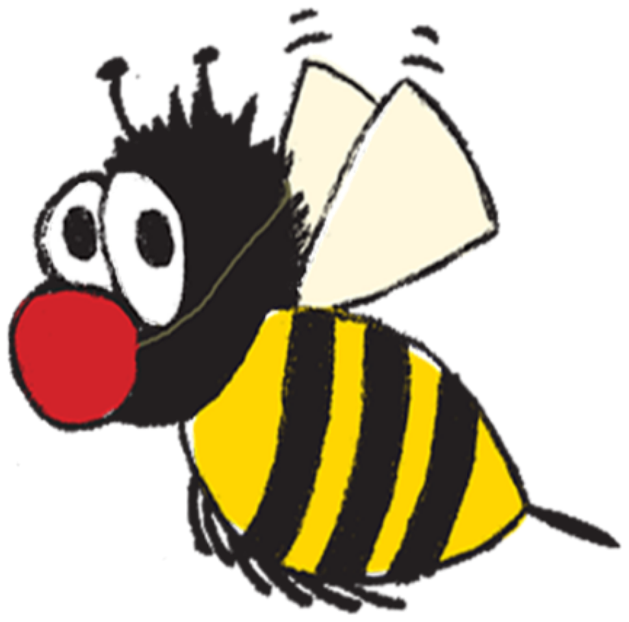
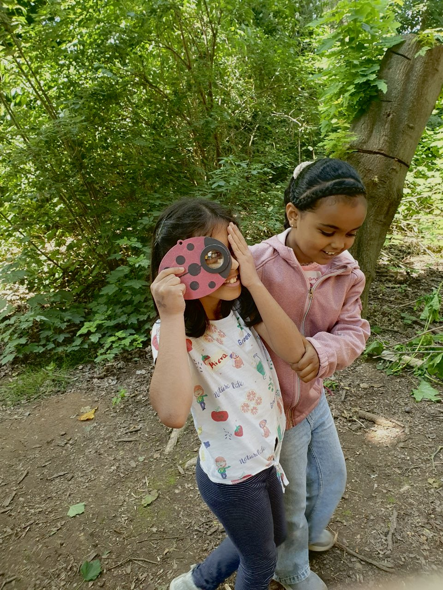
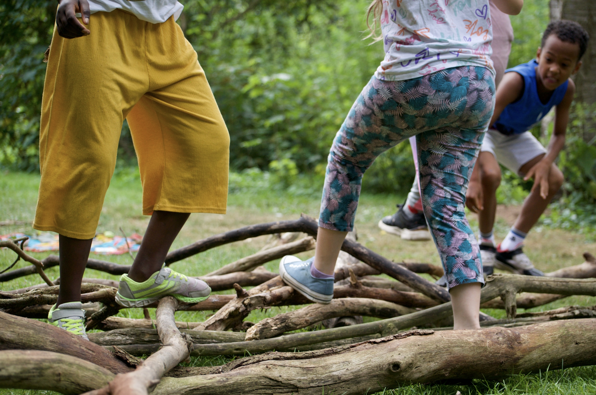
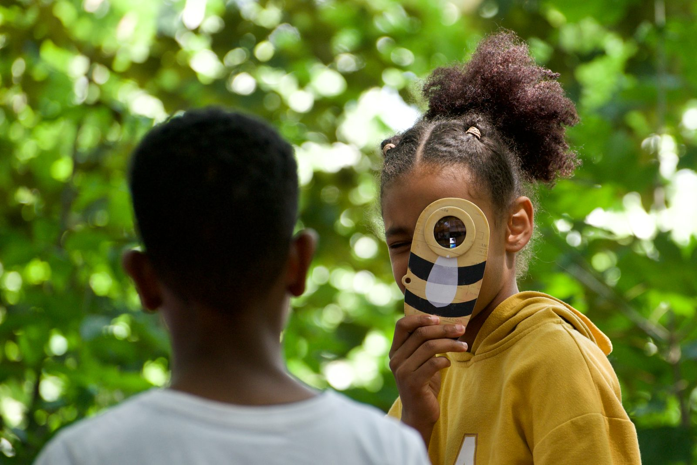
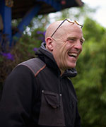
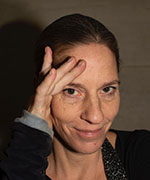
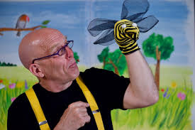

Im naturbelassenen Ambiente des LichtLuftBades laden wir zu phantastischen Erlebnistagen mit einer Aufführung des Bienentheaters und spannenden, lehrreichen umweltpädagogischen Spielangeboten.
Der Vormittag beginnt mit einer Aufführung des Bienentheaterstücks im Circuszelt. Danach haben die Kinder im Klassenverbund die Möglichkeit, an verschiedenen Workshop-Stationen die inhaltlichen Themen des Theaterstücks spielerisch zu vertiefen. Sie werden dabei von einem erfahrenen Team aus Umwelt- und Theaterpädagog:innen begleitet. Lehramtsstudent:innen der Bremer Uni unterstützen die Gruppen im Rahmen eines Praxisseminars von Dr. Angela Bolland.
„Ein Nashorn macht Theater" ist ein Theaterstück für Kitakinder. Im Mittelpunkt stehen Emotionen, Konfliktlösung und Sprachförderung — spielerisch, einfühlsam und mitten aus der Erlebniswelt der Kinder.
Im wunderschönen, naturbelassenen Ambiente des LichtLuftBades ist im Jahr 2025 in Kooperation mit dem Bremer Figurentheater Mensch, Puppe! ein neuer Spielort für umweltbezogenes und qualitativ hochwertiges Theater für Kinder und Erwachsene entstanden.
Die laufenden Spieltermine im Theatergarten für die Saison 2026 finden Sie direkt auf der Seite unseres Kooperationspartners.
Zu den Spielterminen ↗Thematisch geht es um die Bedrohung der natürlichen Kreisläufe in der Natur durch uns Menschen. Anhand der Geschichte einer Raupe, die zum Schmetterling wird, wird das Thema kindgerecht bearbeitet und gemeinsam mit den Kindern nach einer Lösung im Sinne des Umweltschutzes geforscht.
Neben dem Theatererlebnis im kleinen Circuszelt ist ein theatral inszenierter Rundweg durch das naturbelassene Ambiente des LichtLuftBades für die Kinder ein besonderes (Natur-)Erlebnis, das sie behutsam in die Geschichte einführt.
Mit Elementen aus Figurentheater, Musik und Storytelling entsteht ein mitreißendes und zugleich informatives Theaterstück, welches den Kindern die faszinierende Welt der Schmetterlinge und Insekten nahebringt.
In Kooperation mit der Figurenspielerin Johanna Pätzold und der Schauspielerin Julia Klein.
In einer poetisch-phantasievollen und zugleich lehrreichen Geschichte ist es dem Schauspieler Sven Hegeler gelungen, die faszinierende und bedrohte Lebensweise der Bienen und Insekten in kindgerechter Form lebendig werden zu lassen.
Mit den Elementen Erzähltheater, Musik und Zauberei wird die Geschichte eines Circusclowns erzählt, der seine Liebe zum Imkern und den Bienen entdeckt. Die Bedrohung der Natur wird durch einen giftspritzenden Arbeiter dargestellt. Gemeinsam mit den Kindern werden im Theaterspiel verschiedene Lösungsmöglichkeiten erkundet und spielerisch umgesetzt.
Für Vorschulgruppen, mit Spielanregungen und Sachmaterial
PDF herunterladen ↓Für die Eingangsstufe, mit Material zur Vor- und Nachbereitung
PDF herunterladen ↓Für die Klassen 3 und 4, mit vertiefenden Sachinformationen
PDF herunterladen ↓Ein Programm zur Sprachförderung für die Abschlussgruppen der Kitas.
In diesem Theaterprogramm dient der Vortrag und die improvisierten Szenen des Schauspielers als Angebot an die Kinder, selber sprachaktiv in die Geschichten einzusteigen. Die Rahmenhandlung der Kamishibai-Geschichten ist die Einladung für die Kinder, aktiv zu werden. Zuhören und freies Sprechen vor der Gruppe können hier mit der einfühlsamen Teilnahme des Schauspielers erfahren und von den Kindern umgesetzt werden.



Der Schauspieler, Clown und Artist Sven Hegeler wurde 1961 in São Paulo geboren. Seine Ausbildung absolvierte er an der Artistenschule in Berlin. Er wirkte in verschiedenen Circus- und Varieté-Inszenierungen mit, u.a. Circus Roncalli, Traumtheater Salome, Wintergartenvarieté Berlin.
Bis 1990 verschiedene Engagements in Deutschland und Europa (Circus Roncalli, Traumtheater Salome, Expo Sevilla, Festas de Lisboa, Kultursommer Copenhagen). Ab 1995 Zusammenarbeit mit dem Kölner Spielecircus und Entwicklung der Kindermitmachcircus-Idee. Ab dem Jahr 2000 eigene Kindertheater-Produktionen, ausgezeichnet als „Kindertheater des Monats“ in Nordrhein-Westfalen.
2019 gründete er Potztausendschön e.V., dessen Geschäftsführer er seitdem ist.
Illustration Kamishibai-Bildkarten